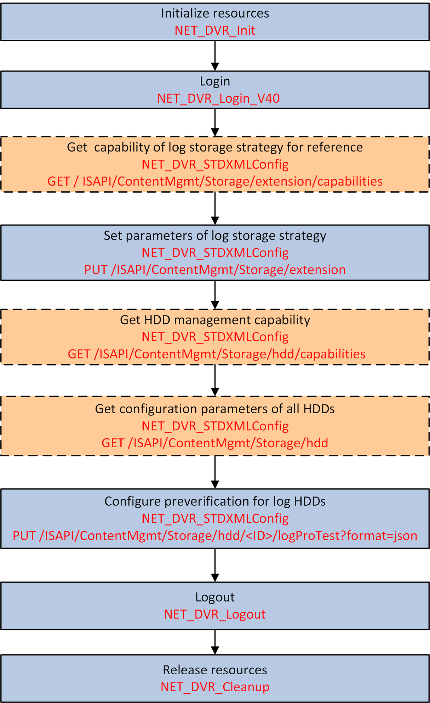

You can save the log files in default mode or custom mode. In the default
mode, each HDD can save up to 64 MB log files, and the storage space will automatically be
overwritten when the space usage reaches 64 MB. In the custom mode, it is available to
specify HDDs to save log files.

Figure 1 Programming Flow of
Configuring Log Storage Mode
- Optional:
Call NET_DVR_STDXMLConfig to transmit the request URI: /ISAPI/ContentMgmt/Storage/extension/capabilities by GET method to get the
capability of log storage strategy for reference.
-
Call NET_DVR_STDXMLConfig to transmit the request URI /ISAPI/ContentMgmt/Storage/extension by PUT method, and set the node
<logStorageMode> as "system" (system default
mode) or "custom" (custom mode) in the message XML_storageExtension.
- Optional:
Call NET_DVR_STDXMLConfig to transmit the request URI: /ISAPI/ContentMgmt/Storage/hdd/capabilities by GET method to get the HDD
management capability.
The capability is returned in the message XML_Cap_hddList by lpOutputParam.
- Optional:
Call NET_DVR_STDXMLConfig to transmit the request URI: /ISAPI/ContentMgmt/Storage/hdd by GET method to get
configuration parameters of all HDDs.
The parameters are returned in the message XML_hddList by lpOutputParam.
-
Call NET_DVR_STDXMLConfig to transmit the request URI: /ISAPI/ContentMgmt/Storage/hdd/<ID>/logProTest?format=json by PUT method to configure
preverification for log HDDs.
Call NET_DVR_Logout and NET_DVR_Cleanup to log out of the device and release all
resources.